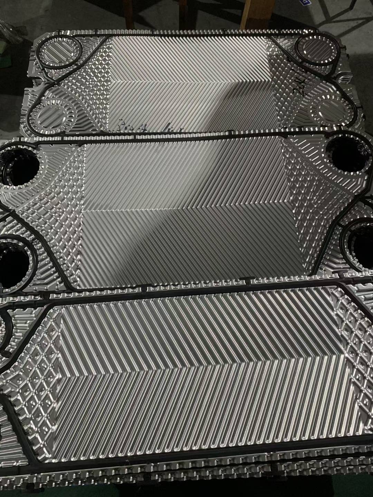
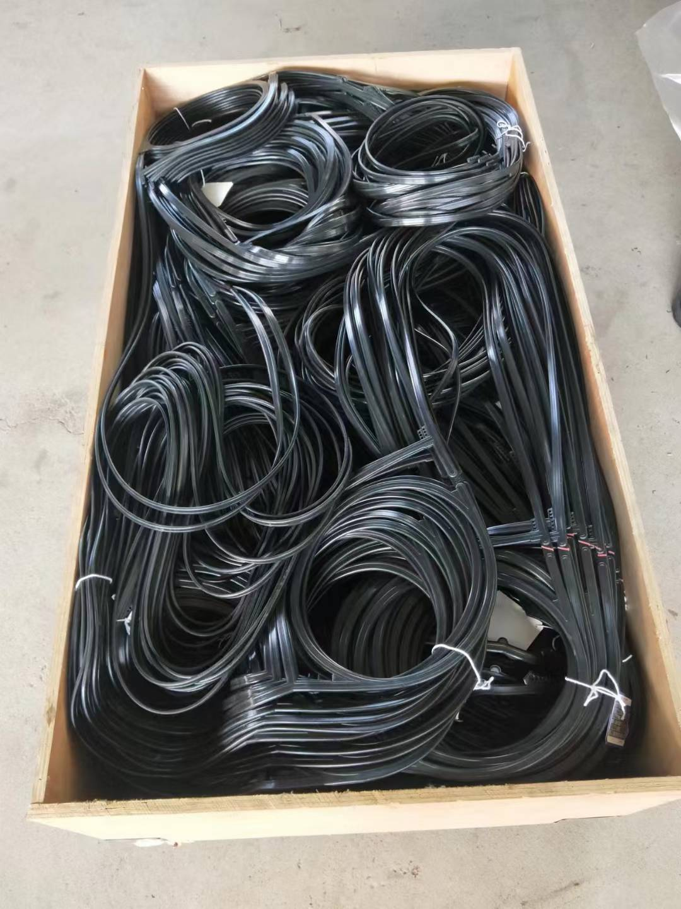
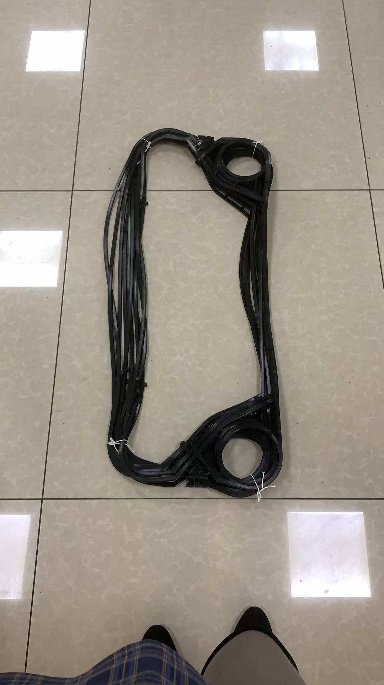
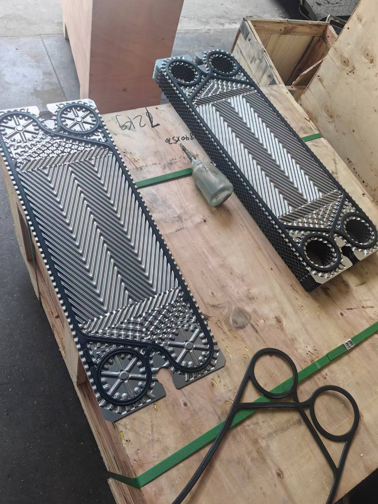
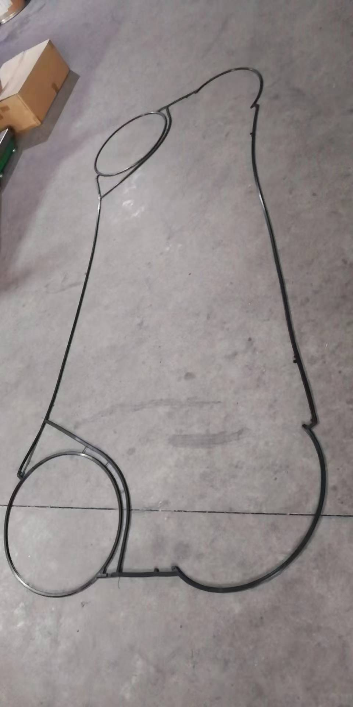
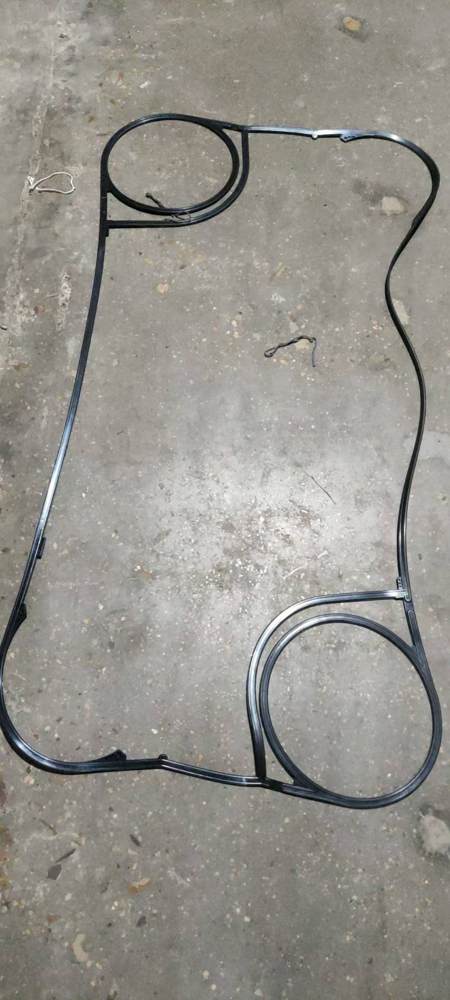
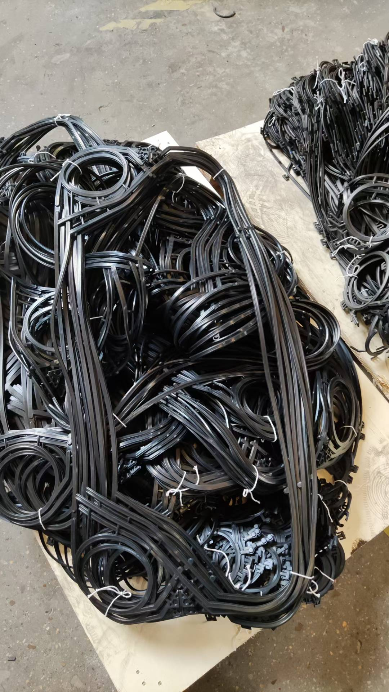

传特GX系列、GC系列与GL系列板式换热器有什么区别？技术参数与选型详解
传特（Tranter）是全球领先的板式换热器制造商之一，产品线涵盖垫片式、钎焊式和焊接式三大类型。其中 GX系列、GC系列 和 GL系列 是传特最常被问及的三个产品系列，很多工程师在选型时容易混淆。本文将从结构原理、技术参数、应用场景和维护成本四个维度进行系统对比。

一、三大系列定位概述
| 对比维度 | GX系列 | GC系列 | GL系列 |
|---|---|---|---|
| 结构类型 | 垫片式板式换热器 | 钎焊式板式换热器 | 焊接式板式换热器 |
| 密封方式 | 弹性垫片密封 | 真空钎焊（无垫片） | 激光焊接（无垫片） |
| 设计压力 | 最高25 bar | 最高30 bar | 最高40 bar |
| 设计温度 | -30°C ~ +180°C | -195°C ~ +220°C | -50°C ~ +300°C |
| 可拆维护 | 是（可更换板片和垫片） | 否（整体更换） | 否（整体更换） |
| 板片材质 | 304/316L/Ti/Hastelloy | 316L/Nickel/钛 | 316L/Ti/Inconel |
| 典型应用 | 船舶、HVAC、食品 | 制冷、低温工程 | 高温高压、腐蚀性介质 |
简而言之：GX系列是"全能型选手"，GC系列是"紧凑高效型"，GL系列是"极端工况专家"。
二、GX系列 — 垫片式板式换热器

2.1 结构特点
GX系列是传特最经典的垫片式板式换热器，板片之间采用弹性橡胶垫片密封，通过螺栓夹紧固定在框架内。其核心优势在于可拆卸维护——当板片结垢或损坏时，只需松开螺栓即可逐片清洗或更换。
2.2 板片设计
GX系列采用传特专利的人字形波纹板片设计，板片表面压制成交错的人字形纹路，流体在板片间形成强烈的湍流，换热系数可达5000-7000 W/(m²·K)，远高于管壳式换热器。

2.3 常用型号及参数
| 型号 | 单板面积 | 最大换热面积 | 接口尺寸 | 最大流量 | 典型应用 |
|---|---|---|---|---|---|
| GX12 | 0.12 m² | 5 m² | DN50 | 18 m³/h | 小型冷却系统 |
| GX26 | 0.26 m² | 20 m² | DN65 | 45 m³/h | 中型水-水换热 |
| GX42 | 0.42 m² | 40 m² | DN100 | 90 m³/h | 船舶中央冷却器 |
| GX51 | 0.51 m² | 60 m² | DN125 | 120 m³/h | 区域供暖 |
| GX60 | 0.60 m² | 80 m² | DN150 | 180 m³/h | 大型HVAC系统 |
| GX100 | 1.00 m² | 200 m² | DN200 | 350 m³/h | 工业过程换热 |
| GX140 | 1.40 m² | 400 m² | DN250 | 600 m³/h | 发电厂冷却 |
| GX145 | 1.45 m² | 450 m² | DN250 | 650 m³/h | 大型工业装置 |

2.4 垫片材质选择
GX系列提供多种垫片材质以适应不同介质：
- NBR（丁腈橡胶）：通用型，适用于水、油类介质，工作温度 ≤110°C
- EPDM（三元乙丙橡胶）：耐高温水蒸气，工作温度 ≤150°C，不耐油
- HNBR（氢化丁腈橡胶）：耐高温油类，工作温度 ≤150°C
- Viton（氟橡胶）：耐强腐蚀性介质，工作温度 ≤180°C
2.5 优势与局限
优势：
- 可拆卸清洗，维护成本低
- 板片和垫片可单独更换，性价比高
- 可通过增减板片数量灵活调整换热面积
- 板片材质选择范围广
局限：
- 垫片存在老化周期（一般3-5年需更换）
- 最高工作压力受限于垫片密封（≤25 bar）
- 不适用于强腐蚀性介质频繁工况
三、GC系列 — 钎焊式板式换热器

3.1 结构特点
GC系列是传特的钎焊式板式换热器产品线。与GX系列不同，GC系列在真空炉中将不锈钢板片和铜（或镍）钎焊材料在高温下熔接为一体，完全取消了垫片。板片之间的密封由钎焊焊缝实现，因此可以承受更高的工作压力。
3.2 钎焊工艺
GC系列提供两种钎焊材料：
- 铜钎焊（Cu）：标准型，适用于水、乙二醇溶液等常规介质，性价比高
- 镍钎焊（Ni）：耐腐蚀型，适用于氨、强碱等腐蚀性介质，价格略高
3.3 常用型号及参数
| 型号 | 单板面积 | 最大换热面积 | 接口尺寸 | 最大流量 | 典型应用 |
|---|---|---|---|---|---|
| GC16 | 0.016 m² | 0.5 m² | DN20 | 2.5 m³/h | 小型制冷机组 |
| GC26 | 0.026 m² | 1.2 m² | DN25 | 4.5 m³/h | 商用空调 |
| GC50 | 0.050 m² | 3.5 m² | DN32 | 10 m³/h | 冷水机组 |
| GC51 | 0.051 m² | 4.0 m² | DN40 | 12 m³/h | 热泵系统 |
| GC52 | 0.052 m² | 5.0 m² | DN40 | 14 m³/h | 低温制冷 |
| GC052 | 0.052 m² | 5.5 m² | DN40 | 15 m³/h | 变频压缩机冷却 |
| GC60 | 0.060 m² | 7.0 m² | DN50 | 18 m³/h | 大型冷水机组 |

3.4 优势与局限
优势：
- 结构紧凑，体积仅为同等换热面积GX系列的1/3
- 无垫片，可承受更高压力（最高30 bar）
- 钎焊焊缝密封性好，适用于制冷剂
- 价格低于同面积GX系列（无需框架和螺栓）
局限：
- 不可拆卸清洗，内部结垢后只能化学清洗或整体更换
- 不适用于含颗粒物或易结垢的介质
- 板片材质选择有限（主要316L和镍）
四、GL系列 — 焊焊式板式换热器

4.1 结构特点
GL系列是传特的焊接式板式换热器，板片之间采用激光焊接技术在板片边缘进行连续焊缝密封。与钎焊不同，GL系列使用的是与板片同材质的焊接材料，焊缝强度与板片本身一致，可承受极端高温高压工况。
4.2 焊接工艺
GL系列采用**激光束焊接（Laser Welding）**技术：
- 焊缝深度可达板片厚度的1.5倍
- 焊缝宽度仅0.5-1.0mm，对板片换热面积影响极小
- 热影响区小，不会降低板片本身的耐腐蚀性能
- 可实现不锈钢、钛合金、Inconel等材质的焊接

4.3 常用型号及参数
| 型号 | 单板面积 | 最大换热面积 | 接口尺寸 | 设计压力 | 设计温度 | 典型应用 |
|---|---|---|---|---|---|---|
| GL13 | 0.13 m² | 8 m² | DN50 | 40 bar | 300°C | 导热油加热 |
| GL230 | 2.30 m² | 500 m² | DN300 | 35 bar | 280°C | 石化炼油 |
| GL-P | 定制 | 定制 | 定制 | 40 bar | 300°C | 特殊工况 |
4.4 优势与局限
优势：
- 无垫片，完全杜绝泄漏风险
- 可承受高温高压（最高40 bar / 300°C）
- 焊缝材质与板片一致，无电化学腐蚀问题
- 适用于强腐蚀性介质（配合钛或Inconel板片）
局限：
- 价格较高（约为GX系列的2-3倍）
- 不可拆卸清洗，需化学清洗或高压水冲洗
- 制造周期较长（定制化生产为主）
五、三大系列关键对比

5.1 换热性能对比
| 性能指标 | GX系列 | GC系列 | GL系列 |
|---|---|---|---|
| 总传热系数 | 5000-7000 W/(m²·K) | 6000-8000 W/(m²·K) | 5500-7500 W/(m²·K) |
| 压降范围 | 10-100 kPa | 15-120 kPa | 10-100 kPa |
| 紧凑性（m²/m³） | 150-250 | 250-400 | 200-350 |
GC系列因钎焊结构无垫片间隙，换热效率最高，紧凑性也最好。GX系列因垫片占据一定空间，紧凑性略低。GL系列焊接结构介于两者之间。
5.2 经济性对比
| 成本项目 | GX系列 | GC系列 | GL系列 |
|---|---|---|---|
| 初始采购成本 | 中等 | 低 | 高 |
| 垫片更换成本（3-5年） | 有 | 无 | 无 |
| 清洗维护成本 | 低（可拆卸） | 高（化学清洗） | 高（化学清洗） |
| 使用寿命 | 15-20年 | 10-15年 | 20-25年 |
| 综合性价比 | ★★★★★ | ★★★★ | ★★★ |
5.3 选型决策流程
第一步：确认介质类型
- 清洁水/乙二醇 → 三种均可
- 含颗粒物/易结垢 → 优先GX（可拆卸清洗）
- 制冷剂（氟利昂、氨） → GC（铜/镍钎焊）
- 导热油/高温介质 → GL（焊接耐高温）
第二步：确认工况温度和压力
- 温度<180°C，压力<25 bar → GX
- 温度<220°C，压力<30 bar → GC
- 温度<300°C，压力<40 bar → GL
第三步：确认维护需求
- 需要定期清洗和更换板片 → GX
- 无需维护、安装后长期运行 → GC或GL
- 介质易结垢但需要焊接结构 → GL（配合化学清洗）
六、典型应用案例
6.1 船舶中央冷却器 — GX系列

船舶中央冷却系统中，海水侧极易结垢和滋生海生物。GX系列的可拆卸结构允许船员定期打开设备清洗板片，更换老化的EPDM垫片。一般选用316L不锈钢或钛合金板片配合EPDM垫片，设计寿命可达20年以上。
6.2 商用制冷机组冷凝器 — GC系列

商用空调和冷水机组中，制冷剂侧需要高密封性以防止泄漏。GC系列铜钎焊结构完美适配R134a、R410A等制冷剂，结构紧凑可大幅减小机组体积。典型选型为GC50或GC51，换热面积3-5 m²即可满足50-100kW冷量需求。
6.3 石化行业导热油换热 — GL系列
石化装置中的导热油系统工作温度常达250-300°C，远超GX垫片的耐温极限（180°C）。GL系列焊接结构无垫片限制，配合316L或Inconel板片可长期稳定运行。GL230大型型号可满足500 m²以上的大换热面积需求。
七、配件与维护要点
GX系列配件清单
| 配件类型 | 说明 |
|---|---|
| 换热板片 | 304/316L/钛/Hastelloy，按型号匹配 |
| 密封垫片 | NBR/EPDM/HNBR/Viton，按介质选型 |
| 固定螺栓 | 8.8级或10.9级镀锌螺栓 |
| 导向杆 | 上导杆/下导杆组件 |
| 压紧板 | 前压紧板/后压紧板 |
| 接口法兰 | DIN/ANSI/JIS标准 |
GC系列维护建议
- 定期检查进出口压差，压差增大表明内部可能堵塞
- 化学清洗时使用弱酸或弱碱溶液循环冲洗
- 避免介质中含固体颗粒（过滤器精度建议≤100μm）
- 发现外漏时需整体更换（无法修复）
GL系列维护建议
- 定期检查焊缝外观有无裂纹
- 化学清洗后需做水压试验确认焊缝完好
- 温度变化速率控制在≤50°C/h，避免热应力损伤焊缝
- 配合在线监测系统跟踪进出口温差变化
八、常见问题解答
Q1：GX系列可以改成钎焊式吗？
不可以。GX系列板片的波纹设计和板片厚度是为垫片密封优化的，钎焊需要专用的板片设计。如果需要钎焊式产品，请选择GC系列。
Q2：GC系列能用于海水冷却吗？
铜钎焊GC系列不建议用于海水（铜会被海水腐蚀）。如果必须使用钎焊式，可选择镍钎焊型号，或直接选用GX系列配合钛板片。
Q3：GL系列和GX系列的板片通用吗？
不通用。GL系列的焊接板片在边缘设计了焊接坡口结构，而GX系列的板片边缘是为垫片密封设计的，两者板片几何形状不同。
Q4：如何判断该选哪个系列？
最简单的判断方法：能用水洗的选GX，制冷剂用的选GC，高温高压的选GL。 如果不确定，建议联系我们进行专业选型计算。
总结
传特GX、GC、GL三大系列各有定位，不存在"哪个更好"的问题，而是"哪个更适合你的工况"。选型时需要综合考虑介质类型、温度压力、维护需求和经济性。对于大多数常规水冷应用，GX系列是首选；制冷行业推荐GC系列；高温高压和强腐蚀工况则必须选择GL系列。
如需传特板式换热器选型计算、配件报价或技术支持，欢迎联系我们获取专业服务。